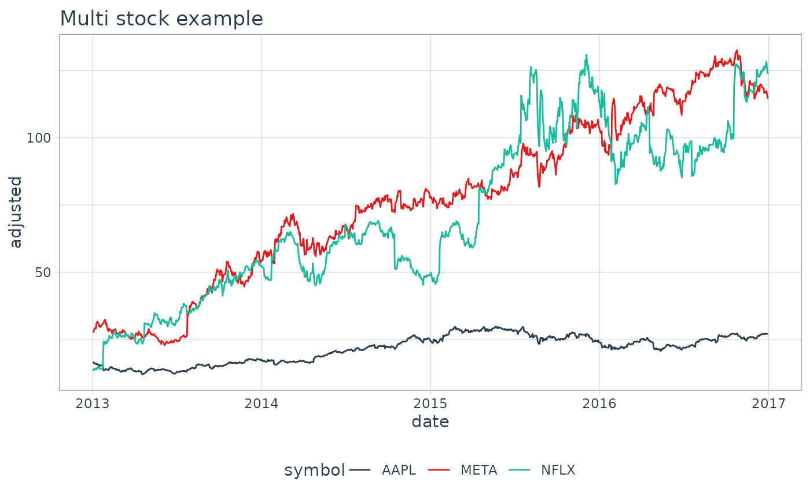

The tidyquant scales add colors that work nicely with theme_tq().
Usage
scale_color_tq(..., theme = "light")
scale_colour_tq(..., theme = "light")
scale_fill_tq(..., theme = "light")Arguments
- ...
common parameters for
scale_color_manual()orscale_fill_manual():name,breaks,labels,na.value,limitsandguide.- theme
one of "light", "dark", or "green". This should match the
theme_tq()that is used with it.
Examples
# Load libraries
library(dplyr)
library(ggplot2)
# Get stock prices
stocks <- c("AAPL", "META", "NFLX") %>%
tq_get(from = "2013-01-01",
to = "2017-01-01")
# Plot for stocks
g <- stocks %>%
ggplot(aes(date, adjusted, color = symbol)) +
geom_line() +
labs(title = "Multi stock example",
xlab = "Date",
ylab = "Adjusted Close")
# Plot with tidyquant theme and colors
g +
theme_tq() +
scale_color_tq()
